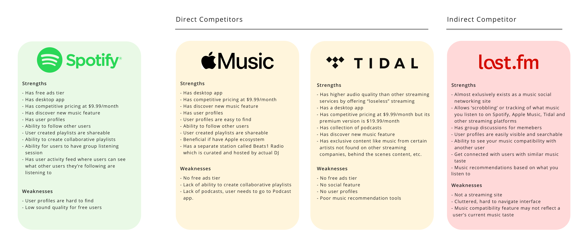

* * * * *
Research
Hypothesis
Based on how popular Spotify Wrapped is, there seems to be a desire by users to share their music taste with others, and get a review of what they listened to.
With that desire in mind, I believe that adding a music compatibility feature on user’s profiles will meet that desire in a way that no other music streaming site is currently doing.
My inspiration for this feature is a music compatibility feature that Last.Fm has. Though Last.Fm is not a music streaming site, its ability to track what you listen to in order to connect with others with similar music taste is an understated feature with tremendous potential.
Research Goals and Objectives
My main research goal is to test my hypothesis on whether or not a music compatibility feature will be successful in creating a more social and interactive experience for Spotify users.
My secondary research goal is to develop an in-depth understanding on what users currently enjoy about Spotify compared to its competitors, and what users think the app lacks.
My research objectives were:
- What are the social capabilities that exist across different music streaming sites?
- What pain points currently exist within the Spotify experience?
- What makes using Spotify an enjoyable experience?
- Understand how users currently interact with other users on Spotify.
- Discover if users would benefit from a music compatibility feature.
Competitive Analysis
I conducted a competitive analysis to determine what popular music streaming companies are doing to create a social element to their app’s experience
and see if there is any overlap as well as opportunities for disruption.
While Last.FM is not a direct competitor, I wanted to delve into what their site offered as a music social networking site and compare those features
with the social features Spotify, Apple Music, and Tidal offer.
See detailed analysis
Hide
detailed analysis

My research showed that Apple Music is curreently Spotify’s biggest competitor. While Spotify offers more social features than Apple Music with
group listening sessions and collaborative playlists, Apple Music has a stronger user profile interface.
For example, it’s much easier to find other user profiles on Apple Music than on Spotify.
Secondary Research
I explored Last.fm's music compatibility feature and identified its strengths and weaknesses.
Then, I explored forums and communities where Last.fm users created more accurate compatibility tools as well as their own data visualizations for this feature.
Based on my research on these user-created tools there appears to be a desire amongst users to:
- Have a more accurate compatibility feature with a filter to pick your own timespan on the data pulled.
- See more transparency on the algorithms used to calculate music compatibility.
- See more than three overlapping artists between users.
- See this data visualized in a more aesthetically pleasing way.
My research also demonstrates that Last.fm appeals to ‘die hard’ music lovers who enjoy looking at data and statistics regarding their music listening habits.
While the above desires and needs of this user base are useful to know, they might not meet the desires and needs of the average Spotify user.
By conducting user interviews with Spotify users, I can find out what a Spotify user would want from a music
compatibility feature and see if there is any overlap between Spotify and Last.fm users.
User Interviews
I conducted user interviews with 3 participants to gain an understanding of how a music compatibility feature can foster social interaction and whether or not it is needed.
I recruited participants who I considered to be ‘Spotify Power Users.’ These are Spotify users that frequently use Spotify and follow at least 30 users on Spotify.
Some notable findings regarding thoughts on music compatibility in general and a potential music comptability feature:
- All three participants said finding people with similar music taste as them is important.
- 2 out of the 3 participants said they would want to see their music compatibility with people they don’t know that well
- 2 out of 3 participants said this feature would change the way they use Spotify
- All 3 participants said this feature would make them visit other user’s profiles more often
" “I think that this feature would make Spotify more of a social app. Right now, the activity feed is a pretty passive feature. It’s not a main feature, it just catches my eye on the side.”"
When asked what an ideal music compatibility feature would look like, participants said:
- They would like to see overlapping artists between themselves and another user.
1 participant said that if it’s a lesser known artist, just seeing that her and another user listen to that artist would suffice.
However, if the artist is someone with a bigger name or a more prolific body of work, she would want it to say what specific album or song you both listened to.
- They would like to see random fun facts like the ones Spotify Wrapped provides.
These include facts like:
1. "You both listened to [x] album a lot the year it came out"
2. "This user listened to this album 50 times."
Branding Research
Since my goal is to develop a music compatibility feature and integrate that feature into Spotify’s existing design system, it’s important to take a look at Spotify’s biggest example of data visualization found on the app: Spotify Wrapped.
Key Takeaways
Based on findings from my user interviews, my hypothesis was correct. A music compatibility feature will add a more social and interactive element to Spotify’s existing social capabilities.
With the addition of a music compatibility feature, users will:
- Feel more compelled to visit user profiles
- Have the ability to develop new friendships with people they otherwise did not think they were compatible with
- Help users create playlists for other users with more confidence
Based on my research overall, I believe that integrating a music compatibility feature into user profiles will make the most sense, considering users already utilize user profiles as a way to
see what artists and playlists someone listens to.
Also, user profiles on Spotify are an underutilized form of real estate on Spotify’s website, especially when compared to Apple Music. By adding this feature to user profiles, there will be more traffic driven towards user profiles.
* * * * *
Define
POV and HMW
Using insights found in my user interviews, I created point of views (POVs) to get a sense of what the target user needs. I then generated How Might We (HMW) questions from those POVs in order to create a starting point to brainstorm possible solutions from.
Brainstorming
I sketched out ideas on Procreate to come up with solutions to the HMW questions I came up with. My goal in creating these sketches was to continuously come up with new ideas without sticking to just one solution.
Key Takeaways
Coming up with possible solutions to my HMW questions was fun but also challenging because I had to come up with different ways to visualize data--something I never really done before.
Not only did I need to think about how to visualize this data, but I also needed to think about what data would be of interest to users in the first place.
Because of this, usability testing will be key in determining how my data visualizations will be understood and enjoyed by everyday Spotify users.


{kind=link}
{kind=link}
{kind=link}
{kind=link}
{kind=link}
{kind=link}
{kind=link}
{kind=link}
{kind=link}
{kind=link}
{kind=link}
{kind=link}
{kind=link}
{kind=link}
{kind=link}
{kind=link}
{kind=link}
{kind=link}
{kind=link}
{kind=link}
{kind=link}
{kind=link}
{kind=link}
{kind=link}
{kind=link}